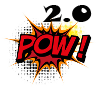

Explode Geometry for 3ds Max
Explode Geometry
This plug-in can be used to choose one or more nodes in the scene and create
"exploded" geometry. The exploded geometry is actually 3 or 4 sided faces and
you have the options to add modifiers to enhance the finished geometry to your
needs.
Getting Started
|Install/Uninstall|Additional Information|Contact|Version History
Getting Started
First select the nodes that you want to explode (you have an option to maintain
the original geometry if desired). From the UI element that you assigned the
plug-in action to, select it and a dialog will come up.
Select the options, and then select "Explode Selected Geometry". A progress bar
will be displayed for long actions and you have the option to cancel.
You can choose to create three or four sided objects as a result of the explode
operation. Select the radio button of the desired operation. Additionally you
can toggle whether to try and convert the object’s mesh before the conversion.
By default it will try to convert, and if it cannot it will end. If it can be
converted (or is already of the correct type) then each node will be exploded
into the resulting individual faces.
You can also control several other options.
Add Shell Modifier -- will add the modifier to the resulting face object, and
apply the given shell offset.
Add Edit Mesh Modifier -- will add the modifier to the stack resulting in edit
mesh operation being immediately available.
Collapse Modifier Stack -- will collapse the stack down to become an editable
mesh as the end result.
Center Pivot -- will center the pivot on each resulting face.
Delete Original -- will remove each original node that was used to create
the new faces.
Installation and Uninstallation
The installer that ran when you downloaded this plug-in from 3ds Max Exchange
has already installed the plug-in.
To uninstall this plug-in, simply rerun the installer by downloading it again
from Exchange, and select the 'Uninstall' button, or you can uninstall it from
'Control Panel\Programs\Programs and Features' (Windows 7) or Add/Remove
Programs (Windows XP), just as you would uninstall any other application from
your system.
Available on
 |
| Windows |
Additional Information
This plug-in was written by Kevin Vandecar - Autodesk Developer Network.
The idea was provided by Louis Marcoux - Autodesk.
Known Issues
There are no known limitations; however it is a very process intensive
program. If you select many nodes with many faces it could take a long
time to complete, or even cause an error your system if it runs out of memory.
For more information on developing with 3ds Max, please visit the 3ds Max Developer Center.
Support Information
If you do encounter issues the please contact Autodesk either by email or phone, the details are listed below:
Phone:
Email: labs.plugins@autodesk.com
Version History
1.0
- Initial release
2.0
- Update release to incude UI color matching and now suports 3ds Max (Design) 2015 and 2016.